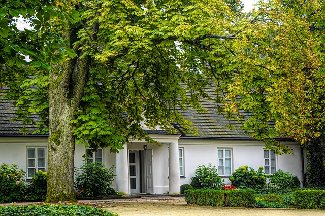

Frédéric Chopin was a Polish composer and pianist...

He was born in 1810 in Żelazowa Wola near Warsaw. In his youth, he liked to sit under the weeping willow tree.
[wyjechał do Paryża, niedługo przed wybuchem powstania (jakiego?)]
[Zmarł w 1849, serce przywieziono do Polski, na słynnym pomniku siedzi pod wierzbą]
All his known compositions are for piano...
[etiuda rewolucyjna, bardzo dynamiczna i dramatyczna]
[preludium "duszenie", ciekawa harmonia]
[najpiękniejsza polska nuta, "szczególnie oddaje polski styl"]